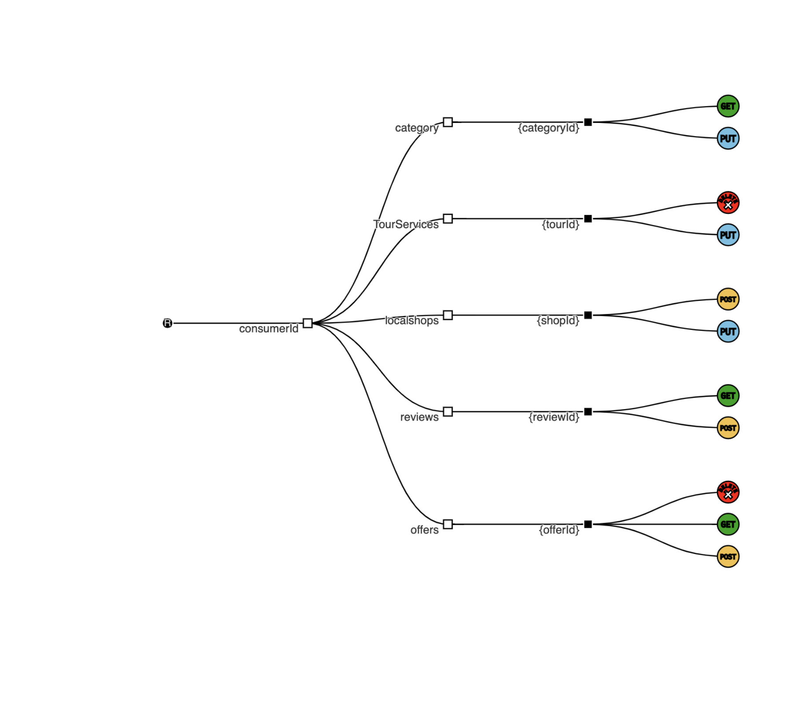

Software Architecture of Local Guide by Deepansha Chowdhary
Getting started
You will use Markdown and PlantUML to describe a software architecture model about your own project.
This document will grow during the semester as you sketch and refine your software architecture model.
When you are done with each task, please push so we can give you feedback about your work.
We begin by selecting a suitable project domain.
Ex - Domain Selection
{.instructions
Submit the name and brief description (about 100 words) of your domain using the following vision statement template:
For [target customers]
Who [need/opportunity/problem]
The [name your project]
Is [type of project]
That [major features, core benefits, compelling reason to buy]
Unlike [current reality or competitors]
Our Project [summarize main advantages over status quo, unique selling point]
Please indicate if your choice is:
- a project you have worked on in the past (by yourself or with a team)
- a project you are going to work on this semester in another lecture (which one?)
- a new project you plan to build in the future
- some existing open source project you are interested to contribute to
The chosen domain should be unique for each student.
Please be ready to give a 2 minute presentation about it (you can use a slide but it's not necessary)
Hint: to choose a meaningful project look at the rest of the modeling tasks which you are going to perform in the context of your domain.
}
Project Name: Local Guide
Project Type:
Vision Statement:
For [target customers] Youth, people under 30 years, essentially newcomers who are planning to shift to Lugano
Who [need/opportunity/problem]
Google maps exists, but it exhibits a very global outlook on everything. You might see a lot of supermarkets in the search list, but what about the cheapest one? Or the one with the best quality? Results are vast, but often not very precise. Not only that, Google searches can get messy, require a lot of memory retention on users part, for someone who has never set foot in foregin land - settling down can become a nightmare. Having observing students on various groups and forums, despite the vast amount of info available on the internet, many people remain clueless about the most basic needs, which in fact are the most important ones. For that purpose,such apps are the need of the hour, as the summarize the exact information an individual may require.
The Local Guide
Is [type of project] a mobile application
That [major features, core benefits, compelling reason to buy]
Features: * Distinct categories for each necessity, : transportation, clothes, furniture, shopping, medical, financial,work related etc * Basic info for every category will be listed, most common banks, mobile network providers, waste management rules etc * All categories have the best option listed for them, and links provided for more additional info * Language mode so users are able to read at their own comfort * Filters for every option based on: prices, distance, quality ratings (given by the users) * Users can compare prices of items between two shops * Users will be offered incentives, discounts to motivate them to review places visited by them more * As a future prospect: to add modes in the app, traveler and new settler mode: to help personalize the users experience
Why this app?
Shifting to a new country is a very different experience, something that no one can ever be fully well prepared for - what more could someone yearn for than a curated view of the best options for your basic amenities? Local Guide gets you exactly that - be it anything you want to know, best insurance, best bank to open an account in, cheap shopping options - everything is there in the app. Everyone knows the big names, but what the local shops, that don't turn up in the google search results, that actually keep relevant stuff - is what this app focuses on.
Unlike [current reality or competitors] Google Maps
Our Project [summarize main advantages over status quo, unique selling point] More localized view of things, considering a students point of view - keeping in mind their budget and all the basic amenities that one needs in a new place. Removes the need to search for multiple things one at a time, all the information is available for you in one single app
Additional Information:
This is a new project I plan on implementing in the future.
Ex - Architectural Decision Records
{.instructions
Software architecture is about making design decisions that will impact the quality of the software you plan to build.
Let's practice how to describe an architectural decision. We will keep using ADRs to document architectural decisions in the rest of the model.
Use the following template to capture one or more architectural design decisions in the context of your project domain
Pass: 1 ADR
Good: 2 ADR
Exceed: >2 ADR
}
ADR 1 : Implementation of Offline Mode
- What did you decide?
Database: Realm Database
- What was the context for your decision?
The main aim of this decision is to find the most beneficial and optimal solution that takes into consideration the functionalities of the Local Guide app. The main requirement that is into focus, is that the data and the user interface of the application should be made available to the user at all times,with or without network connection.
What is the goal you are trying to achieve?
Allow users to access all the UI and information of the app offline.
What are the constraints?
Limitation on a single string's length.
What is the scope of your decision? Does it affect the entire architecture?
The decision impacts the entire architecture as the selection of the database is of prime importance, because it will be the main storage for all the data required for the mobile app.
- What is the problem you are trying to solve?
How can I give the users the benefit of accessing the information at all times?
-
Which alternative options did you consider?
-
SQLite Database
- CoreData
-
Realm Database
-
Which one did you choose?
Realm Database
- What is the main reason for that?
It fulfills the main purpose of the application, to give users the feature to access all the information even when offline, in scenarios where there is no access to data or Wifi and also it is fully compatible with Java, which will be used to develop the mobile app.
List the positive consequences (pros) of your decision:
- Essentially designed for offline use as it can handle the unpredictability concerning mobile apps, such as lost connections, devices being shut down at unfavorable timings and so on. As it is offline first, it is always read from and written to the local database and not over the network.
- As this is a local guide app, the most important component will the keeping the UI in sync, realm used live objects which always reference the most up-to-date data on disk when accessed.
- As it runs on the client devices, storing, accessing and updating the data is simple.
If any, list the negative consequences (cons)
- As Realm offers many features, it consequently requires a bit more effort for implementation.
ADR 2 : Programming Language
- What did you decide?
Language: Java
- What was the context for your decision?
The main purpose of this decision was to find the suitable programming language that will be compatible with the database selected in the previous decision.
What is the goal you are trying to achieve?
Compatibility with database and development of mobile app.
What is the scope of your decision? Does it affect the entire architecture?
The decision applies to the entire project and is of upmost importance.
- What is the problem you are trying to solve?
How can we find a suitable language that interoperates with the chosen database?
-
Which alternative options did you consider?
-
Kotlin
- Dart
- C++
-
Java
-
Which one did you choose?
Java
- What is the main reason for that?
Java has one of the most intensive support available, which makes it better for the team to develop the application. Plus, as the project requires several other API'S such as geo location services,language translators, database functions, java fulfills the goal.
List the positive consequences (pros) of your decision:
- Versatile to integrate distinctive apps and functions
- Secure environment for design and development
- Has a lot of built in tools and rich set of library.
If any, list the negative consequences (cons)
- Takes longer time to run
ADR 3 : Monetization Model
- What did you decide?
Model: Combination of In app purchases and Sponsorship
- What was the context for your decision?
The purpose to be looked into is how will the app be monetized after its post deployment stage.
What is the scope of your decision? Does it affect the entire architecture?
The scope of this decision extends to the post deployment stage of the application
- What is the problem you are trying to solve?
What will be the revenue generation strategy of the app?
-
Which alternative options did you consider?
-
In-App Advertising
- Pay to download apps
- Paywalled Content
- Transactions Commissions
- Subscriptions
-
In app purchases
-
Which one did you choose?
Combination of the subscription and in app purchases model.
- What is the main reason for that?
The reason for selecting the combination is to divide the monetization into two different strategies, as one strategy can often prove to become outdated after some time, or not favorable for the business.
List the positive consequences (pros) of your decision:
- In-app purchases help in promotions of the application's unique functionalities
- Subscriptions are beneficial to users in the long run, which in turn increase good word of mouth for both the app and the businesses connected with it
- Reduced costs of acquiring new customers.
If any, list the negative consequences (cons)
- The revenue generation process could be a bit slow and time consuming, as it takes time to build the loyalty of customers.
Ex - Quality Attribute Scenario
{.instructions
-
Pick a scenario for a specific quality attribute. Describe it with natural language.
-
Refine the scenario using the following structure:
@startuml
skinparam componentStyle rectangle
skinparam monochrome true
skinparam shadowing false
rectangle Environment {
[Source] -> [System] : Stimulus
[System] -> [Measure] : Response
}
@enduml
Stimulus: condition affecting the system
Source: entity generating the stimulus
Environment: context under which stimulus occurred (e.g., build, test, deployment, startup, normal operation, overload, failure, attack, change)
Response: observable result of the stimulus
Measure: benchmark or target value defining a successful response
Pass: 3 scenarios
Good: >3 scenarios
Exceed: >6 scenarios using challenging qualities
}
Example Scenario
Quality: Recoverability
Scenario: In case of power failure, rebooting the system should take up to 20 seconds.
@startuml
skinparam componentStyle rectangle
skinparam monochrome true
skinparam shadowing false
rectangle "After Power has been restored" {
rectangle "Admin" as Source
rectangle "max 20s" as Measure
Source -> [System] : "Boot"
[System] -> [Measure] : "Online"
}
@enduml
Local Guide Scenarios
Quality: Availability
Scenario: In case of loss of network connectivity on the users side, the system is supposed to fetch the required data from realm, and sync it with the interface to be displayed to the user.
@startuml
skinparam componentStyle rectangle
skinparam monochrome true
skinparam shadowing false
rectangle “If Network Connection Interrupts” {
rectangle “Application” as Source
rectangle “Display UI and content” as Measure
Source -> [Realm DB] : “Fetches data”
[Realm DB] -> [Measure] : “Sync data from DB with UI”
}
@enduml
Quality: Modifiability
Scenario: Developer wants to update details in the database for a particular category
@startuml
skinparam componentStyle rectangle
skinparam monochrome true
skinparam shadowing false
rectangle “When updating Database” {
rectangle “Developer” as Source
rectangle “Category information consequently gets updated” as Measure
Source -> [System] : “ make changes to content for a particular category”
[System] -> [Measure] : “Runs the appropriate query for modification”
}
@enduml
Quality: Functionality
{.feedback
- This is a Functionality use case.
}
Scenario: System stores the browsing details of the user as preferences within the columns category_id and shop_name in the database.
@startuml
skinparam componentStyle rectangle
skinparam monochrome true
skinparam shadowing false
rectangle “Storage of browsing details” {
rectangle “User” as Source
rectangle “Save under required category in database” as Measure
Source -> [System] : “Browses through the application”
[System] -> [Measure] : “Sends alert to sync the user’s history”
}
@enduml
Quality: Usability
Scenario: If a new user faces issues in operating the application, the system suggests the help button to them, and operation afterwards going through the help shouldn't take more than 3 minutes.
@startuml
skinparam componentStyle rectangle
skinparam monochrome true
skinparam shadowing false
rectangle “During Runtime” {
rectangle “User” as Source
rectangle “Operation of app afterwards takes less than 3 mins” as Measure
Source -> [System] : “Is new to system and faces problems in operation”
[System] -> [Measure] : “ suggests help button”
}
@enduml
Quality: Interoperability
{.feedback
- Could also be classified as Modularity, Reusability or Composability
}
Scenario : The user selects the directions button for a particular shop, the app should be able to correctly map the location to the place selected by the user and display it on google maps.
@startuml
skinparam componentStyle rectangle
skinparam monochrome true
skinparam shadowing false
rectangle “On selection of a particular location” {
rectangle “User” as Source
rectangle “Display on Google Maps” as Measure
Source -> [System] : “Selects the direction button for a shop”
[System] -> [Measure] : “Location is correctly mapped to the shop”
}
@enduml
Quality: Security
Scenario: Have the connected authentication api be called at the time of login into the application by the user.
@startuml
skinparam componentStyle rectangle
skinparam monochrome true
skinparam shadowing false
rectangle “At time of Login” {
rectangle “User” as Source
rectangle “Prompt Google authentication” as Measure
Source -> [System] : “email and password are inputted by user”
[System] -> [Measure] : “ Details are processed”
}
@enduml
Quality: Changeability
Scenario: Addition of a new payment processing method for the in app purchases.
@startuml
skinparam componentStyle rectangle
skinparam monochrome true
skinparam shadowing false
rectangle “Under Normal Conditions” {
rectangle “Developer” as Source
rectangle “Process takes less than one week” as Measure
Source -> [System] : “Change the billing process to accommodate new credit card provider”
[System] -> [Measure] : “Change in code base ”
}
@enduml
Ex - Quality Attribute Tradeoff
{.instructions
Pick a free combination of two qualities on the map and write your name to claim it.
Then write a short text giving an example for the tradeoff in this assignment.
Pass: 1 unique trade-off
Good: 2 trade-offs
Exceed: >2 trade-offs
}
Portability vs. Performance (Example)
Developing an app natively for each OS is expensive and time consuming, but it benefits from a good performance. Choosing a cross-platform environment on the other hand simplify the development process, making it faster and cheaper, but it might suffer in performance.
Trade-offs
Extensibility and Design Consistency
In order to keep the operations simplified and easier to identify for the users, a same design pattern needs to be maintained, across all the different screens of the application - so that users do not get confused when trying out different alternatives in the app. Keeping design consistent does hold up customer’s expectations but for future prospects, growing the architecture further will put a lot of constraints on the development of the app and more time and effort in implementation.
Customizability and Composability
Creating a lot of customizations for the users in the application will make the app more useful and assist them in more advanced levels, but it would require many sub components and interconnections within the app which would lead to utilization of a lot of resources and increment of development costs.
Adaptability and Performance
As an application that works as a guidebook for the users, one of the prime advantages is that it can be highly adaptable to the user’s preferences, interests, and new trends in the market, but as the complexity increases, it will overload the development process, leading to possible reductions in performance.
{.feedback
Which kind of performance are you referring to? the one of the overloaded developers? or the one of the resulting adaptable system?
}
Ex - Feature Modeling
{.instructions
In the context of your chosen project domain, describe your domain using a feature model.
The feature model should be correctly visualized using the following template:
If possible, make use of all modeling constructs.
Pass: Include at least 4 non-trivial features
Good: Include at least 6 non-trivial features, which are all implemented by your project
Exceed: Include more than 8 non-trivial features, indicate which are found in your project and which belong to one competitor
}
@startuml
rectangle "Personalize (app)" as A
rectangle "Sync preferences" as B
rectangle "Wishlist” as C
rectangle “Connect with Social media” as Z
A *-- B
A *-- C
A *-- Z
rectangle "Browse" as H
rectangle “Search” as DQ
rectangle "Select Category" as DQA
DQ -- DQA
rectangle “Filtering” as E
rectangle “Distance” as EA
rectangle “Price” as ED
rectangle “Ratings” as EB
rectangle “Most Popular” as EC
rectangle "Services" as ET
rectangle "Incentives" as EW
E *-- EA
E *-- ED
E *-- EB
E *-- EC
E *-- ET
E *-- EW
rectangle “Additional Info” as F
H *-- DQ
H *-- E
H *-- F
rectangle "GPS" as Q
note left
Implemented by <&map-marker>
end note
rectangle "Security" as K
rectangle "Google Authentication" as Y
rectangle "OTP" as U
K o--Y
K o--U
rectangle “Mode" as M
rectangle “Traveler” as T
rectangle “Settler” as S
M o--T
M o--S
rectangle "Reviews" as N
rectangle “Purchases” as P
rectangle “ View” as J
rectangle “ Avail Offers” as W
rectangle “Subscriptions” as D
P *-- J
P *-- W
P *-- D
rectangle “Transport Services” as L
rectangle “Bus” as FD
rectangle “Train” as DW
rectangle “Bicycle” as DE
L *-- FD
L *-- DW
L *-- DE
rectangle “Bookings” as X
rectangle “Hotels” as XA
rectangle “Tours” as XB
rectangle “Restaurants” as XC
X *-- XA
X *-- XB
X *-- XC
DQ-[dotted]> E : require
W -[dotted]> B : require
rectangle "Local Guide" as R
R --@ A
R --@ H
R --@ Q
R --@ K
R --@ N
R --0 L
R --0 X
R --0 P
R --0 M
skinparam monochrome true
skinparam shadowing false
skinparam defaultFontName Courier
@enduml
Ex - Context Diagram
{.instructions
Prepare a context diagram to define the design boundary for your project.
Here is a PlantUML/C4 example to get started.
Make sure to include all possible user personas and external dependencies you may need.
Pass: 1 User and 1 Dependency
Good: >1 User and >1 Dependency
Exceed: >1 User and >1 Dependency, with both incoming and outgoing dependencies
}
@startuml
!include <C4/C4_Container>
Person(user_s, "User", "")
Person(user_p, "Shop owners", "")
Person(user_d, "Developers", "")
System_Boundary(boundary, "Realm DB") {
}
System_Ext(application, “application")
System_Ext(API, "API")
Rel(user_s, boundary, Browses through the application)
Rel(user_p, boundary, Provides all relevant information)
Rel(user_d, boundary, Updates information for different categories )
Rel(boundary, application,Sync Changes ,Information)
Rel(boundary,API,Location and external browser usage,content)
@enduml
Ex - Component Model: Top-Down
{.instructions
Within the context of your project domain, represent a model of your modular software architecture decomposed into components.
The number of components in your logical view should be between 6 and 9:
- At least one component should be further decomposed into sub components
- At least one component should already exist. You should plan how to reuse it, by locating it in some software repository and including in your model the exact link to its specification and its price.
- At least one component should be stateful.
The logical view should represent provide/require dependencies that are consistent with the interactions represented in the process view.
The process view should illustrate how the proposed decomposition is used to satisfy the main use case given by your domain model.
You can add additional process views showing how other use cases can be satisfied by the same set of components.
This assignment will focus on modularity-related decisions, we will worry about deployment and the container view later.
Here is a PlantUML example logical view and process view.
@startuml
title Example Process View
participant "User Interface" as UI
participant "Music Player" as MP
participant "Songs Repository" as SR
participant "Customer Database" as CDB
participant "Payment Service" as PS
UI -> SR: Browse Songs
UI -> CDB: Buy Song
CDB -> PS: Charge Customer
UI -> MP: Play Song
MP -> SR: Get Music
skinparam monochrome true
skinparam shadowing false
skinparam defaultFontName Courier
@enduml
Hint: How to connect sub-components to other external components? Use this pattern.
@startuml
component C {
component S
component S2
S -(0- S2
}
interface I
S - I
component C2
I )- C2
skinparam monochrome true
skinparam shadowing false
skinparam defaultFontName Courier
@enduml
Pass: 6 components (1 decomposed), 1 use case/process view
Good: 6 components (1 decomposed), 2 use case/process view
Exceed: >6 components (>1 decomposed) and >2 use case/process view
}
Logical View
@startuml
!include <tupadr3/font-awesome/database>
component UserInterface {
component Services {
component Transport
component Bookings
component Mode
Mode -(0- Transport
Transport -(0- Bookings
}
component Browsing{
component Search
component Filtering
component Info
component Location
Search -(0-Filtering
Filtering -(0-Info
Info -(0- Location
}
component Personalize{
component Preferences
component Subscriptions
}
}
component [RealmDatabase <$database{scale=0.33}>] as RealmDatabase
component ExternalAPI
component PaymentGateway
component Security
UserInterface -(0- RealmDatabase
UserInterface -(0- ExternalAPI
UserInterface -(0- Security
UserInterface -(0- PaymentGateway
RealmDatabase -(0- ExternalAPI
RealmDatabase -(0- PaymentGateway
Security -(0- RealmDatabase
skinparam monochrome true
skinparam shadowing false
skinparam defaultFontName Courier
@enduml
{.feedback
What is the role of the Browsing component? Why is it different than the UI?
Why are the sub-components chained together?
Why are Services connected with dependencies when there are no interactions with them in any process view?
Also PaymentGateway is never used in any process view.
Why the API doesn't connect to the database? Is it the Google Maps API? or the API of your architecture?
}
Process Views
Use case 1 : User operates the application
@startuml
title User and browsing interaction
box "User Interface"
participant "User Interface" as UI
participant Search as SH
participant Filtering as FG
participant Info as IN
Participant Location as LO
participant "Services" as LN
end box
participant "Security" as MP
participant "Payment Gateway" as PS
participant "API" as AP
database RealmDB #grey
UI -> MP: User logins into app
RealmDB --> UI : User authenticated
UI -> UI : User opens the browsing screen
UI -> SH : User searches for desired category
SH --> UI: Search displays sub categories for one selected category
UI -> SH: User selects the filtering option of user reviews
SH -> FG : Search calls the filtering to display available filters
FG --> UI : Display filters to user
UI-> FG : User selects reviews
FG -> RealmDB : Fetches the reviews from the database
RealmDB --> FG: Reviews are fetched back as response to filtering request
FG --> UI: The reviews are displayed
UI -> IN: The user clicks on additional link button
IN -> AP: The links are opened in the browser using relevant API
AP --> UI: Results are displayed to the user
UI -> LO: Directions button is clicked
LO -> RealmDB: Sends requests for coordinates
RealmDB --> LO : Coordinates retrieved
LO -> AP : Request Google Maps from API
LO -> UI: Display Location
skinparam monochrome true
skinparam shadowing false
skinparam defaultFontName Courier
@enduml
Use Case 2 : User makes a purchase within the application
@startuml
title User purchases tickets for a tour
box "User Interface"
participant "User Interface" as UI
participant Search as SH
participant Filtering as FG
participant Info as IN
Participant Location as LO
participant "Services" as LN
end box
participant "Security" as MP
participant "Payment Gateway" as PS
participant "API" as AP
database RealmDB #grey
UI -> MP: User logins into app
RealmDB --> UI : User authenticated
UI -> UI : User opens the browsing screen
UI -> SH : User searches for transportation
SH --> UI: Search displays sub categories for transportation
UI -> SH: User selects the filtering option of price
SH -> FG : Search calls the filtering to display options
FG -> RealmDB : Requests the results from the database
RealmDB --> FG: Results are fetched back as response to filtering request
FG --> UI: The transport options with filter price are displayed
UI -> LN : User clicks on buy daily pass under sub category bus
LN -> AP: Requests the link for payment processing
AP -> PS: Connects with the gateway
PS -> UI : Payment page displayed for user details
UI -> UI : Transaction made
PS -> RealmDB : Transaction details are saved
PS -->UI : Confirmation message displayed
skinparam monochrome true
skinparam shadowing false
skinparam defaultFontName Courier
@enduml
Use Case 3 : Subscription process in the application
@startuml
title Subscription Process
participant "User Interface" as UI
participant "Security" as MP
participant "Browsing" as SR
participant "Services" as LN
participant "Payment Gateway" as PS
participant "API" as AP
database RealmDB #grey
UI -> MP: User logins into app
RealmDB --> UI : User authenticated
UI -> SR: Sync preferences enabled
SR -> RealmDB : Wishlist saved in database
RealmDB --> SR: Save successful
SR -> AP: Notifies shop owner
AP -> UI : Alert generation activated for new offers
skinparam monochrome true
skinparam shadowing false
skinparam defaultFontName Courier
@enduml
Use case 4 : Selection of App Mode (Traveller/Settler) by the User
@startuml
title Selection of App mode by User
participant "User Interface" as UI
participant "Security" as MP
participant "Browsing" as SR
participant "Services" as LN
participant "Payment Gateway" as PS
participant "API" as AP
database RealmDB #grey
UI -> MP: User logins into app
RealmDB --> UI : User authenticated
UI ->LN : User selects traveller mode
LN -> RealmDB : User request sent to DB
RealmDB -> RealmDB : Adds userId to relevant column in DB
RealmDB -> RealmDB : Save column information
RealmDB -> UI: Display the relevant screens for user
skinparam monochrome true
skinparam shadowing false
skinparam defaultFontName Courier
@enduml
Ex - Component Model: Bottom-Up
{.instructions
Within the context of your project domain, represent a model of your modular software architecture decomposed into components.
To design this model you should attempt to buy and reuse as many components as possible.
In addition to the logical and process views, you should give a precise list to all sources and prices of the components you have selected to be reused.
Write an ADR to document your component selection process (indicating which alternatives were considered).
Pass: Existing design with at least 1 reused components (1 Logical View, 1 Process View)
Good: Existing design with at least 3 reused components (1 Logical View, 1 Process View, 1 ADR)
Exceed: Redesign based on >3 reused components (1 Logical View, >1 Process View, >1 ADR)
}
Logical View
@startuml
!include <tupadr3/font-awesome/database>
note top of UserInterface
Instead of being coded from scratch,
Google's Material design UI kit will be
used, which already has code available
to design all the needed components.
end note
component UserInterface {
component Services {
component Transport
component Bookings
component Mode
}
component Browsing{
component Search
component Filtering
component Info
component Location
}
component Personalize{
component Login
component Preferences
component Subscriptions
}
}
component [Firebase <$database{scale=0.33}>] as Firebase
component ExternalAPI
component PaymentGateway
note bottom of PaymentGateway
uses built-in system Stripe
end note
UserInterface -(0- Firebase
UserInterface -(0- ExternalAPI
UserInterface -(0- PaymentGateway
Firebase -0)- ExternalAPI
Firebase -0)- PaymentGateway
skinparam monochrome true
skinparam shadowing false
skinparam defaultFontName Courier
@enduml
Price and specification of components
Material Design UI toolkit for component User Interface
Price: free
Specs: https://material.io/components?platform=android
Firebase for stateful component Database
Price: free at start but gradually increases if application is scaled up
Specs : * https://firebase.google.com/docs/android/setup * https://firebase.google.com/docs/database/android/start * https://firebase.google.com/
Payment Gateway : Stripe
https://github.com/firebase/functions-samples/tree/main/stripe
Process Views
Use case : User operating the application with all of its functionalities
@startuml
title User operates all functions
box "User Interface"
actor user #red
participant Login as LG
participant Search as SH
participant Filtering as FG
participant Info as IN
participant Location as LO
participant "Subscriptions" as SN
participant "Preferences" as PN
participant "Transport" as TP
participant "Bookings" as BP
participant "Mode" as MD
end box
participant "Payment Gateway" as PS
participant "ExternalAPI" as AP
database Firebase #grey
user -> LG: User inputs authentication credentials
LG -> Firebase: Begin Authentication
Firebase -> Firebase : Pass credentials to Firebase Authentication SDK
Firebase ->Firebase : Backend verifies credentials
Firebase->LG : User successfully authenticated
LG -> LG : Display welcome message
user -> MD: Selects traveller mode
MD -> Firebase : Request send to database
Firebase -> Firebase: Add user mode to relevant column in db
Firebase -> Firebase: Save column information
Firebase -> user: Display relevant screens to user
user -> SH :User browses through category
user -> IN: User clicks on additional info
IN -> AP: The links are opened in the browser using relevant API
AP -> user: Results are displayed to user
user -> LO: Directions button is clicked
LO ->Firebase: Sends requests for coordinates
Firebase --> LO : Coordinates retrieved
LO -> AP : Request Maps API
AP -> user: Display Location
user -> SH : User selects transportation
SH -> SH : Return sub categories
user -> SH : user clicks on bus, adds filter offers for tickets
SH ->FG : Filtering called to display results
FG -> user : Display ticket offers
user -> TP : Selects offer, request for valid route
TP -> user: Display applicable routes
user -> BP : User clicks on buy ticket
BP -> PS : Transaction initiated for user
PS -> Firebase: Details stored under relevant user id
PS -> user: Transaction succesful
user -> PN: Sync preferences enabled
PN -> Firebase : Wishlist saved in database
Firebase --> PN: Save successful
Firebase -> Firebase : notifies shop owner through firebase cloud messaging
Firebase -> user : Alert generation activated for new offers
user -> SN : browses through monthly subscription offers
user -> SN: Selects subscription for a shop
SN -> PS : Payment process started
PS -> Firebase : Details stored under subscriptionid
PS -> user: Subscribed successfully
skinparam monochrome true
skinparam shadowing false
skinparam defaultFontName Courier
@enduml
Use case 2 : User creating check-in request in Bookings component
@startuml
box "User Interface"
actor user #red
participant Login as LG
participant Search as SH
participant Filtering as FG
participant Info as IN
participant Location as LO
participant "Subscriptions" as SN
participant "Preferences" as PN
participant "Transport" as TP
participant "Bookings" as BP
participant "Mode" as MD
end box
participant "Payment Gateway" as PS
participant "ExternalAPI" as AP
database Firebase #grey
user -> LG : User logins into app
Firebase -> user : User authenticated
user -> BP : Create a reservation
BP -> BP : Filter reservations
BP -> BP: Create check-in request
BP -> AP: Webhook for check-in request
AP -> BP: Fetch check-in request
AP -> AP: Check if check-in is possible
AP -> BP : Move to Data_required
BP -> user : Send email asking for details
rnote over user
End of flow
if user never responds
end rnote
user -> BP : Fills out check-in form
BP -> BP: Change check-in status to requested
BP -> AP : Webhook for check-in request
AP -> BP: Fetch check-in request
AP -> AP : Checks if information provided is valid, completes pre check-in
AP -> BP: Send room access info and change check-in to Success or Denied.
rnote over AP
Room access info may
include QR codes, door codes,
directions to the place etc.
end rnote
BP -> user : Send email with confirmation or denial
rnote over user
Follow instructions
to get access to room
end rnote
skinparam monochrome true
skinparam shadowing false
skinparam defaultFontName Courier
@enduml
ADR 1 : Selection of UI toolkit
- What did you decide?
UI Toolkit : Material Design
- What was the context for your decision?
The aim of this decision is to find the most optimal solution so that the development time for the user interface can be reduced considerably
What is the goal you are trying to achieve?
Design an interface that is appealing to the users and consumes less work hours.
What is the scope of your decision? Does it affect the entire architecture?
The decision only impacts the look and feel of the mobile app
- What is the problem you are trying to solve?
How can a developer create the most user friendly app with minimal effort and less code?
-
Which alternative options did you consider?
-
Material Design
-
Jetpack compose
-
Which one did you choose?
Material Design
- What is the main reason for that?
It comprises all the features that will be implemented for the application, and as the app caters to the tourism industry, it needs to have an aesthetic appeal, and that particular purpose is fulfilled by Material’s pre-written code for different types of UI components.
List the positive consequences (pros) of your decision:
- Reduction of code, which would otherwise increase the workload if hardcoded in java
- As it is developed by Google, makes it more easier to integrate with api’s efficiently
ADR 2 : Selection of a different database
- What did you decide?
Firebase
- What was the context for your decision?
The goal of this decision was to find another database which offers all the features as the previously selected one (Realm Database), and offers a method to integrate the Security component of the app within the database itself.
What is the scope of your decision? Does it affect the entire architecture?
As the database is the main component dealing with storage and querying, this decision impacts the entire structure of the application
- What is the problem you are trying to solve?
How can the selection of the database be maneuvered in such a way that it handles the security component and effortless integration with Google APIs?
-
Which alternative options did you consider?
-
Firebase
- Cloud Firestore
-
Elasticsearch
-
Which one did you choose?
Firebase
- What is the main reason for that?
The main purpose that will be served by firebase is integration of the security component within itself, and also as the developer has already experience with this technology, it will be less time consuming as compared to the previous decisions of Realm Database, which required everything to be learned from scratch.
List the positive consequences (pros) of your decision:
- As a Google Cloud service, it also gives you access to other Google products and features, in this case the UI toolkit and api
- When the app is linked with Firebase, there is no need for creation of a separate login interface, as its built-in login UI can be utilized to sign users into the app
Ex - Interface/API Specification
{.instructions
In this iteration, we will detail your previous model to specify the provided interface of all components based on their interactions found in your existing process views.
-
choose whether to use the top down or bottom up model. If you specify the interfaces of the bottom up model, your interface descriptions should match what the components you reuse already offer.
-
decide which interface elements are operations, properties, or events.
Get started with one of these PlantUML templates, or you can come up with your own notation to describe the interfaces, as long as it includes all the necessary details.
The first template describes separately the provided/required interfaces of each component.
The second template annotates the logical view with the interface descriptions: less redundant, but needs the logical dependencies to be modeled to show which are the required interfaces.
Pass: define interfaces of all outer-level components
Good: Define interfaces of all outer-level components. Does your architecture publish a Web API? If not, extend it so that it does.
Exceed: Also, document the Web API using the OpenAPI language. You can use the OpenAPI-to-Tree tool to visualize the structure of your OpenAPI description.
}
API Specification:
@startuml
component UserInterface
component RESTAPI
interface " " as iRESTAPI
component Firebase
interface " " as iFirebase
component Stripe
interface " " as iStripe
component LocalGuideDB
interface " " as iLocalGuideDB
component WebAPI
UserInterface --( iRESTAPI
UserInterface --( iFirebase
iRESTAPI - RESTAPI
RESTAPI--( iFirebase
WebAPI --( iRESTAPI
iFirebase - Firebase
Stripe--( iFirebase
iStripe- Stripe
LocalGuideDB --( iFirebase
UserInterface -( iLocalGuideDB
iLocalGuideDB - LocalGuideDB
UserInterface --( iStripe
note bottom of iRESTAPI
operations:
..
getcategories(string)
getsubcategories
getFilters
getUserPreference(subscription_id,shop_id,offer_id)
getLocation
getTransactionLink
getExternalURL
end note
note bottom of iFirebase
operations:
..
storeStripeKey
getData
updateData
saveData
deleteData
--
properties:
..
category
filter
usercredentials
mode
transport
subscriptions
end note
note top of iStripe
operations:
..
createCustomer
createCheckoutSession
createPortalLink
handleWebhookEvents
onUserDeleted
onCustomerDataDeleted
setPaymentMethod
setInvoiceSettings
--
events:
..
product.updated
product.deleted
price.created
price.updated
price.deleted
checkout.session.completed
customer.subscription.created
customer.subscription.updated
customer.subscription.deleted
invoice.paid
invoice.payment_succeeded
invoice.payment_failed
invoice.upcoming
invoice.payment_action_required
end note
note right of iLocalGuideDB
operations:
..
createUserSignIn
setAuthenticationproviders
writeUserdata( userID, name,email)
storecategories(string)
storesubcategories
storeFilters
storeLocation
storeExternalURL
getGoogleMapsAPI
getGooglePlacesAPI
getBookingsAPI
storeUserCredentials
storeTransactionDetails
storeUserPreferences
storeUserSubscriptions
end note
skinparam monochrome true
skinparam shadowing false
@enduml
Local Guide component refers to the database created inside the Firebase console.
Open API Description

Ex - Connector View
{.instructions
Extend your existing models introducing the connector view
For every pair of connected components (logical view), pick the most suitable connector. Existing components can play the role of connector, or new connectors may need to be introduced.
Make sure that the interactions shown in the process views reflect the primitives of the selected connector
Pass: model existing connectors based on previous model decisions
Good: model existing connectors based on previous model decisions, write an ADR about the choice of one connector
Exceed: introduce a new type of connector and update your existing process view (sequence diagram) to show the connector primitives in action
}
{.feedback
When describing the interaction with a connector in the process view, please use the primitives of the specific type of connector you have introduced.
For example the LG tuple space should interact with in/out/read instead of retrieve sub category, send request for coordinates.
It is unusual for connectors to directly connect between themselves without any intermediate component.
The process view indicates a direct interaction between Stripe and the Local Guide (details stored under relevant user id) which is not modeled in the connector view
In general the process view should be modeled using a more technical language to describe the content of the messages as opposed to natural language. This would make it much easier to map the connector primitives to the represented interactions between component/connectors.
The ADR do not discuss the choice of connector, but as in the previous assignment they explain why one API was selected out of many alternative ones. This is outside the scope of the current assignment. We expected here to consider options such as: call, message queue, shared database, tuple space.
}
New Connectors 1. ConnectAPI which stands for Stripe Connect, which is essentially a platform that enables specific users of the app, targetted towards shop owners and online marketplaces which will enable them to get paid via stripe. On top of that it offers owners the functionality of tools such as CRM analytics.
- Transport API is the local Swiss Public Transport API, which covers public transport within Switzerland. The API uses a web service provided by search.ch. It has resources for locations, connections, station board etc.
Specs:
https://transport.opendata.ch/docs.html
https://timetable.search.ch/api/help
Existing Connectors
- REST API is the Firebase REST API, which will be used for all the calls between the components.
Process Views
Use case 1: Operation using the Transport API
@startuml
title Basic functionality of app
box "User Interface"
actor user #red
participant Login as LG
participant Search as SH
participant Filtering as FG
participant Info as IN
participant Location as LO
participant "Subscriptions" as SN
participant "Preferences" as PN
participant "Bookings" as BP
participant "Transport" as TP
participant "Mode" as MD
end box
entity TransportAPI as TAP
entity ConnectAPI as SC
entity StripeAPI AS SP
participant "Stripe" as PS
entity RESTAPI as AP
database Firebase #grey
user -> LG: User inputs authentication credentials
LG -> Firebase: Begin Authentication
Firebase->LG : User successfully authenticated
user -> SH :User browses through categories
user-> SH: User clicks on Grocery
SH->Firebase: GET sub category Supermarket
Firebase-> user: Display sub category
user -> IN: User clicks on additional info
IN -> AP: GET https://example.com/summer-sale
AP --> user: Display link
user -> LO: Directions button is clicked
LO ->Firebase: POST coordinate_request
Firebase -> Firebase : GET coordinates
Firebase -> AP : GET Maps API
AP -->user : Display location
user -> SH : User selects transportation
SH -> SH : Return sub categories
user -> TP : User clicks on train
TP->FG : Filtering called to display results
FG->user: Relevant results displayed
user->TP: User clicks on locations
TP->TAP: GET http://transport.opendata.ch/v1/locations
TAP-->user: Return /v1/locations
TP->TAP: GET http://transport.opendata.ch/v1/connections?from=Lausanne&to=Genève
TAP-->user: Return /v1 /connections
user->TP: User clicks station board
TP->TAP: GET http://transport.opendata.ch/v1/stationboard
TAP-->user: Return /v1/stationboard
skinparam monochrome true
skinparam shadowing false
skinparam defaultFontName Courier
@enduml
Use case 2: Operation using Stripe Connect API
@startuml
title Operation of Stripe Connect
box "User Interface"
actor user #red
participant Login as LG
participant Search as SH
participant Filtering as FG
participant Info as IN
participant Location as LO
participant "Subscriptions" as SN
participant "Preferences" as PN
participant "Bookings" as BP
participant "Transport" as TP
participant "Mode" as MD
end box
entity TransportAPI as TAP
entity ConnectAPI as SC
entity StripeAPI AS SP
participant "Stripe" as PS
entity RESTAPI as AP
database Firebase #grey
user -> LG: Shop owner inputs auth credentials
LG -> Firebase: Begin Authentication
Firebase -> Firebase : Pass credentials to FirebaseAuth
Firebase ->Firebase : .getCurrentUser
Firebase-->LG : Owner successfully authenticated
LG->user: Display welcome message
user->SC: POST /v1/accounts with cardPayments,transfers,type,country,email,company,APIKey
SC-->user: Return /v1/accounts
user->SC: POST/v1/account_links with account,refresh_url,return_url,type=account_onboarding,collect
SC-->user: Return "https://connect.stripe.com/setup/s/h0Pj5SzjFTqm"
user->SC: POST /v1/payment_intents with attributes id,amount,automatic_payment_methods,charges,client_secrent,currency,customer,description,last_payment_error,payment_method,status
SC->user: Return /v1/payment_intents
user->SC: POST /v1/payment_methods with id,billing_details,customer,type,customer_balance,card_present
SC-->user:Return payment_methods
user->SC: POST /v1/customers with id.object,address,create,currency,discount,email.invoice_settings,phone,name,shipping,preferred_locales
SC-->user: Return /v1/customers
user-> SC: POST /stripe_webhooks
SC-->user: Return /stripe_webhooks
user->SC: GET /v1/events/:id
SC-->user: Return events
skinparam monochrome true
skinparam shadowing false
skinparam defaultFontName Courier
@enduml
ADR 1: Selection of API connector
- What did you decide?
API as a connector
- What was the context for your decision?
The goal is to fix the mismatch for the transport sub component in the UI.
What is the scope of your decision? Does it affect the entire architecture?
It affects only the user interface of the application, as transport is a sub component in it
-
Which alternative options did you consider?
-
API connector
- A shared database with information on transport
-
tuple with different transport functionalities mapped inside of it
-
Which one did you choose?
API connector
- What is the main reason for that?
The main reason for this selection is primarily the mismatch between the transport sub component of the interface,as there were no relevant shared databases as such to get the information, as for now the app is restricted to transportation within switzerland, and no other type of connector is valid for the interaction I wanted to show, so I decided to go ahead with the transport api which provides public transport within Switzerland. The API uses a web service provided by search.ch
List the positive consequences (pros) of your decision:
- Since the api connector has the information for transport specific to switzerland, it helps to narrow down the work for the developer and eliminates the need to create a new component from scratch.
- Handles the mismatch between the component functionality.
Ex - Adapters and Coupling
{.instructions
- Highlight the connectors (or components) in your existing bottom-up design playing the role of adapter. (We suggest to use the bottom-up design since when dealing with externally sourced components, their interfaces can be a source of mismatches).
- Which kind of mismatch** are they solving?
- Introduce a wrapper in your architecture to hide one of the previously highlighted adapters
- Where would standard interfaces play a role in your architecture? Which standards could be relevant in your domain?
- Explain how one or more pairs of components are coupled according to different coupling facets
- Provide more details on how each adapter solves the mismatches identified using pseudo-code or the actual code
- How can you improve your architectural model to minimize coupling between components? (Include a revised logical/connector view with your solution)
Pass: 1-5 (with one adapter)
Good: 1-6 (with at least two adapters)
Exceed: 1-7 (with at least two adapters)
** If you do not find any mismatch in your existing design we suggest to introduce one artificially.
Hints
- (1) Should we find cases where two components cannot communicate (and are doing it wrongly) and highlight they would need an adapter?, or cases where we have already a "component playing the role of adapter in the view" and highlight only the adapter?
Both are fine. We assumed that if you draw a dependency (or a connector) the interfaces match, but if you detect that the components that should communicate cannot communicate then of course introduce an adapter to solve the mismatch
-
(2) Please show the details about the two interfaces which do not match (e.g., names of parameters, object structures) so that it becomes clear why an adapter is needed and what the adapter should do to bridge the mismatch
-
(5-6) These questions are about the implications on coupling based on the decisions you documented in the connector view. Whenever you have a connector you couple together the components and different connectors will have different forms of coupling
For example, if you use calls everywhere, do you really need them everywhere? is there some pair of components where you could use a message queue instead?
Regarding the coupling facets mentioned in question 5. You do not have to answer all questions related to "discovery", "session", "binding", "interaction", "timing", "interface" and "platform" (p.441, Coupling Facets). Just the ones that you think are relevant for your design and by answering them you can get ideas on how to do question 6.
}
Adapter in bottom-up Model
The bottom-up model has changed from its previous version as in the Connector view assignment, Transport componenent was removed from being the sub component in the User Interface and now will be an external componennt connected to the interface with the relevant api acting as the adapter.
The three adapters already functional are: * Firebase API * Transport API * Stripe API
Mismatch solved
The name of the functions that will be resolved in the mismatch are listed in the code below.
- Firebase API served as the main adapter for coordinating the calls between the user interface and the database.
The set of functions performed at the user interface side will be something as follows:
function requestCategories function getLocations function requestStationDetails function requestOptions function requestPlaces function requestConnections function sendQueries function sendPaymentRequest function getPlacesNearMe
All of these functions will be a set of inputs given by the user, and the api adapters include the set of functions that help perform the specific response for each of these function sets.
-
Transport API solves the mismatch of the mobile app having transport functionality within itself(booking transport around swiss),the api directs the user to the trnsprt.ch, through which they can search the conenctions between the desired locations.
-
Using Stripe api as the adapter, it solves the mismatch by connecting the user interface to external payment gateway Stripe.
Wrapper
@startuml
interface " " as I
component FirebaseHelper {
component FirebaseAPI
FirebaseAPI - I
component Firebase
interface Internal as i
Firebase - i
FirebaseAPI --( i
}
component UserInterface{
component Services {
component Bookings
component Mode
}
component Browsing{
component Search
component Filtering
component Info
component Location
}
component Personalize{
component Login
component Preferences
component Subscriptions
}
}
UserInterface --( I
component Transport
component Stripe
interface " " as I
interface " " as w
UserInterface --( w
Transport - w
Stripe --( I
[<<Adapter>> StripeAPI] as AD
Stripe -AD
AD - UserInterface
@enduml
{.feedback
Please rewire the wrapper to use the following structure:
@startuml
interface External as I
component Wrapper {
component Adapter
Adapter - I
component Incompatible
interface Internal as i
Incompatible - i
Adapter --( i
}
@enduml
The Adapter component is missing from your model
}
Standard Interfaces
Considering the standard interfaces required in the tourism domain,almost all of the components of the bottom-up model conform to the most widely used interfaces when designing of such an application. So for example, in the category of platforms- mobile apps are more in demand than websites/web apps, and the widely used databases for such domains include: Firebase, MySQL, SQLite, MongoDB etc. Earlier in the top-up model, unconventional databases (like RealmDB) were being used, but the model that currently stands is refined to set of standards defined.
{.feedback
Vague references: "most widely used interfaces", "most acceptable" -> which ones exactly?
}
Coupling Facets
Platform Independence
The architecture essentially is platform independent, as the database being used for the application is Firebase, which has support for quite a lot of languages: java, swift, kotlin etc. and also for both the platforms: web and android. In the future, if the implementation will have to be shifted to another language, the client side could only notice slight changes in the UI, but the internal functionality will remain the same.
Interaction
The interaction between user and the external components cannot be indirect. Considering the first case, the user interface makes use of the firebase rest api which plays the role of an adapter pulling data from firebase and displaying to the end user.
Session
The interactions between the user and the app in general, does not depend on the previous selections made by the user, as there is no explicit save of user history, unless user turns on the preferences option in the settings.
{.feedback
Reads well
}
Pseudo code
{.feedback
This is too much code with very little explanation. It is not clear at all which type of mismatch is the code solving. First describe the two interfaces, explain why they do not match and then the code can show how the adapter solved the mismatch.
}
Adapter Transport API
GET URL = 'https://timetable.search.ch/api/'
SET ClientIpAddress
SET ClientUserAgent
function sendAndParseQuery(query) \\parses the query from the client side, fetches the result on the timetable.ch link
{
response = sendQuery(query)
if (response =isServerError()) {
throw Exception(‘'Server error from timetable.search.ch: '.response->getStatusCode().' '.response->getReasonPhrase());
}
content = response->getContent();
result = json_decode(content);
if (response->getStatusCode() == 429) {
throw new HttpException(429, 'Rate limit error from timetable.search.ch: '.content);
.
.
.
return result;
}
function sendQuery(query, url = self::URL)
{
formRequest = query->toFormRequest();
formRequest->setField('ip_address', this->clientIpAddress);
formRequest->setField('user_agent', this->clientUserAgent);
return this->browser->send(formRequest);
}
function findConnections(ConnectionQuery) \\ performs the response action for user asking for connections between two locations
{
result = this->sendAndParseQuery(query);
connections = [];
from = null;
to = null;
stations = [
'from' => [],
'to' => [],
];
result = [
'connections' => connections,
'from' => from,
'to' => to,
'stations' => stations,
];
return result;
}
function findLocations(LocationQuery query) \\ performs response action for user asking for locations on the map
{
result = this->sendAndParseQuery(query);
locations = [];
foreach (result as location) {
locations[] = Entity\LocationFactory::createFromJson(location);
}
return locations;
}
function getStationBoard(StationBoardQuery query) \\performs response action for user asking for station details
{
result = this->sendAndParseQuery(query);
station = Station::createStationFromJson(result->stop);
journeys = [];
if (result->connections) {
foreach (result->connections as connection) {
journey = Entity\Schedule\StationBoardJourney::createFromJson(connection, null);
journey->stop->station = station;
journeys[] = journey;
}
}
stationboard = ['station' => station, 'stationboard' => journeys];
return stationboard;
}
}
Adapter Firebase API
Getting categories:
function getAllCategories = async (req: Request, res: Response) => {
try {
function allCategories = await db.collection('Categories').get()
return res.status(200).json(allCategories.docs)
} catch(error) { return res.status(500).json(error.message) }
}
export { addCategory, getAllCategories }
Getting places:
function findPlace(string input, string inputType, array = []) \\ performs response action for user requesting places
{
response = makeRequest(self::FIND_PLACE, )
return convertToCollection(response, 'candidates')
}
function nearbySearch(string location, string radius = null, array = []) \\ performs response action for user requesting places near their location
{
response = makeRequest(self::NEARBY_SEARCH_URL, )
return convertToCollection(response, 'results')
}
function placeDetails(string placeId, array = []) \\ performs response action for user requesting places
{
response = makeRequest(self::DETAILS_SEARCH_URL, )
return convertToCollection(response)
}
function getOptions(array , string method = 'get') \\gets response for user requesting options
{
options = [
'query' => [
'key' => key,
],
]
if (method == 'post') {
options = array_merge(['body' => json_encode()], options)
} else {
options['query'] = array_merge(options['query'], )
}
options['http_errors'] = false
if (!empty(headers)) {
options['headers'] = headers
}
return options
Improvement of Model
I believe that the current model of the system is already exhibiting minimized coupling, the user interface has only two external dependencies, the database,payment gateway and transport. However in the payment option, instead of having the necessary adapter connect api (which enables creation of custom accounts in Stripe), this option can be kept optional thus leaving with only one api that is the Stripe API acting as the adapter.
{.feedback
Why do you write that the Stripe API acts as an adapter? What are the two interfaces which do not match and thanks to the Stripe API can successfully communicate?
}
Ex - Physical and Deployment Views
{.instructions
a. Extend your architectural model with the following viewpoints:
-
Physical or Container View
-
Deployment View
Your model should be non-trivial: include more than one physical device/virtual container (or both). Be ready to discuss which connectors are found at the device/container boundaries.
b. Write an ADR about which deployment strategy you plan to adopt. The alternatives to be considered are: big bang, blue/green, shadow, pilot, gradual phase-in, canary, A/B testing.
c. (Optional) Prepare a demo of a basic continuous integration and delivery pipeline for your architectural documentation so that you can obtain a single, integrated PDF with all the viewpoints you have modeled so far.
For example:
- configure a GitHub webhook to be called whenever you push changes to your documentation
- setup a GitHub action (or similar) to build and publish your documentation on a website
Pass: 1 physical view, 1 deployment view, 1 ADR (b.)
Good: >1 physical view, >1 deployment view, 1 ADR (b.)
Exceed: 1 physical view, 1 deployment view, 1 ADR (b.) + 1 demo (c.)
}
Physical view
@startuml
rectangle "Local Guide APK" as q {
component UserInterface as a1{
component Services {
component Bookings as b1
component Mode
}
component Browsing{
component Search
component Filtering
component Info
component Location
}
component Personalize{
component Login
component Preferences
component Subscriptions
}
}
}
rectangle "Cloud" as w{
component Firebase
}
rectangle "Web" as e{
component Stripe as r
component Transport as b2
}
q -- w
q -- e
w -- r
@enduml
Deployment View
@startuml
node "Web Server" as d {
component Transport as b
component Stripe as s
}
node "Android mobile device" as a {
node "Local Guide APK" {
component UserInterface {
component Services {
component Bookings
component Mode
}
component Browsing{
component Search
component Filtering
component Info
component Location
}
component Personalize{
component Login
component Preferences
component Subscriptions
}
}
}
}
node "Google server" {
component Firebase as f
}
a -- f : HTTPS
a -- b : HTTPS
a -- s : HTTPS
f -- s : HTTPS
@enduml
ADR for Deployment Strategy
- What did you decide?
Pilot
- What is the problem you are trying to solve?
What will be the most suitable deployment strategy for an app catering to the needs of a particular target audience locally?
-
Which alternative options did you consider?
-
Pilot
- Canary
- A/B Testing
-
Gradual Phase in
-
Which one did you choose?
Pilot
- What is the main reason for that?
The pilot is somewhat closely related to the big bang appraoch, but offers a slight different insight. With this strategy, instead of going live all at once, the application is deployed to a small and targeted group of users who can use the system in a controlled environment. This helps to gather user feedback, make changes and adjustments and improve the overall quality of the application.
-
List the positive consequences (pros) of your decision:
-
If there are problems in the application, they are easier to catch and rectify if deployed initially to a limited set of users
- A bit cheaper than having multiple versions in production, as only one version is in usage.
Ex - Availability and Services
{.instructions
The goal of this week is to plan how to deliver your software as a service with high availability.
- If necessary, change your deployment design so that your software is hosted on a server (which could be running as a Cloud VM). Your SaaS architecture should show how your SaaS can be remotely accessed from a client such as a Web browser, or a mobile app
- Sketch your software as a service pricing model (optional)
- How would you define the availability requirements in your project domain? For example, what would be your expectation for the duration of planned/unplanned downtimes or the longest response time tolerated by your clients?
- Which strategy do you adopt to monitor your service's availability? Extend your architecture with a watchdog or a heartbeat monitor and motivate your choice with an ADR.
- What happens when a stateless component goes down? model a sequence diagram to show what needs to happen to recover one of your critical stateless components
- How do you plan to recover stateful components? write an ADR about your choice of replication strategy and whether you prefer consistency vs. availability. Also, consider whether event sourcing would help in your context.
- How do you plan to avoid cascading failures? Be ready to discuss how the connectors (modeled in your connector view) impact the reliability of your architecture.
- How did you mitigate the impact of your external dependencies being not available? (if applicable)
Pass: 1, 3, 4, one of: 5, 6, 7, 8
Good: 1, 2, 3, 4, two of: 5, 6, 7, 8
Exceed: 1, 2, 3, 4, 5, 6, 7, 8
}
Ex - Scalability
{.instructions
Now that your architecture delivers your software as a service, let's redesign it so that it can scale!
-
Pick one scalability dimension: number of clients, size of input, size of state, number of dependencies
-
How well does your architecture scale along the chosen dimension? Where do you expect the bottleneck to be?
-
Modify your architecture to remove the scalability bottleneck you have identified (show both logical, process and deployment view) - consider whether the API/interface of the bottleneck component should be improved.
-
Write an ADR regarding the scalability pattern you have introduced.
-
Write an ADR regarding the issue of component discovery, choosing one of the alternatives: dependency injection vs. directory. Can you identify an existing component playing the role of directory/dependency injection container? Could you give an example of where you would need to add such component to facilitate dynamic component discovery?
Pass: 1, 2, 3, 5
Good: 1, 2, 3, 4, 5
Exceed: 1, 2, 3, 4, 5 then redo 1, 2, 3 for different scalability dimensions
}
Ex - Flexibility
{.instructions
Only dead software stops changing. You just received a message from your customer, they have an idea. Is your architecture ready for it?
-
Pick a new use case scenario. Precisely, what exactly do you need to change of your existing architecture so that it can be supported? Model the updated logical/process/deployment views.
-
Pick another use case scenario so that it can be supported without any major architectural change (i.e., while you cannot add new components, it is possible to extend the interface of existing ones or introduce new dependencies). Illustrate with a process view, how your previous design can satisfy the new requirement.
-
Change impact. One of your externally sourced component/Web service API has announced it will introduce a breaking change. What is the impact of such change? How can you control and limit the impact of such change? Update your logical view
-
Open up your architecture so that it can be extended with plugins by its end-users. Where would be a good extension point? Update your logical view and give at least one example of what a plugin would actually do.
-
Assuming you have a centralized deployment with all stateful components storing their state in the same database, propose a strategy to split the monolith into at least two different microservices. Model the new logical/deployment view as well as the interfaces of each microservice you introduce.
Pass: 1, one out of 2-5.
Good: 1, two out of 2-5.
Exceed: 1-5.
}